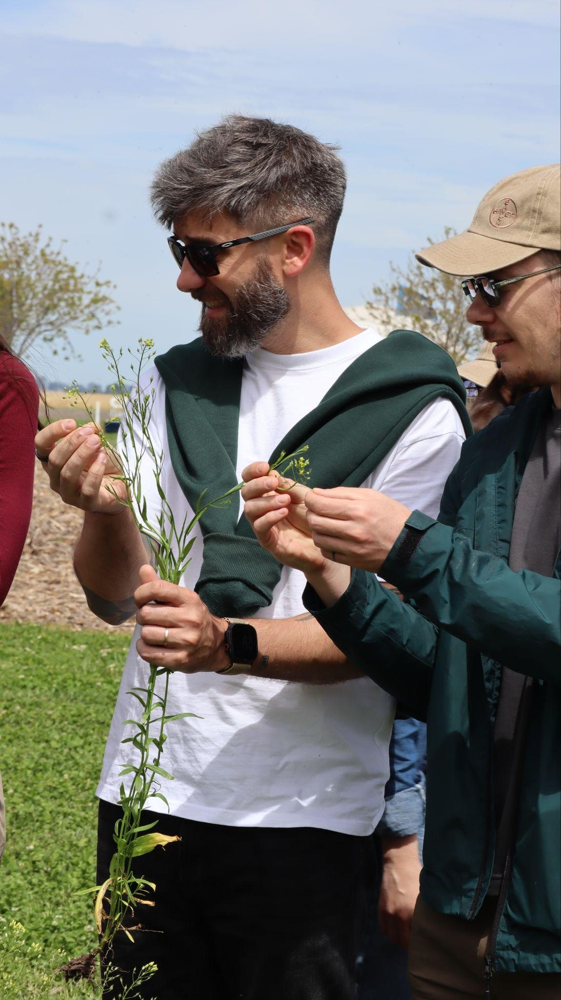
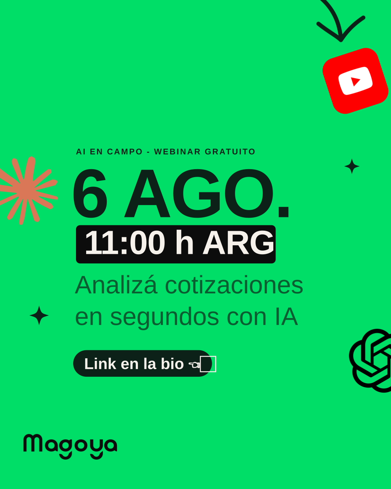

Marca Magoya · octubre de 2026
Consultora hands-on en software y AI para empresas del agro.
La marca en práctica. Encontrá las reglas, las palabras y los recursos para lo que vas a crear.
¿Qué vas a crear?
Elegí por dónde empezar.
Voz y lenguaje
Escribir como Magoya
Encontrá el tono, ejemplos y criterios para cada audiencia.
Consultar la voz → Assets y descargasEncontrar un recurso
Logos, tipografía, íconos y fotos con sus reglas de uso.
Abrir biblioteca → Herramientas de AICrear con AI
Cargá las fuentes vigentes y revisá lo que devuelve tu herramienta.
Preparar herramienta →Consultar todos los capítulos de la marca Estrategia, voz, lenguaje, aplicación e identidad visual
EstrategiaQuiénes somos · Propuesta de valor y oferta · Territorios y Usage Loop · Audiencias · Razones para creer y Método · Valores, pilares y promesa · Personalidad · Arquitectura de marca · TaglineSale del playbook
VozLa voz en la práctica · Personalidad y ejes · Cómo construimos mensajes · Adaptación por audiencia, mercado y canal · Postura y lo que no diceGuía editorial + playbook
LenguajeEstilo y lenguaje · Expresión verbal · Vocabulario de marca · AI, en inglés · Glosario ES / EN / PT · Cómo suena Magoya · Reglas de oro verbalesGuía editorial + playbook
AplicaciónVoceros y territorios · Canales e idioma · Focos de contenido y producciónSale del playbook
Identidad visualLogo y avatares · Color · Tipografía · Fotografía · Íconos · Componentes · Reglas de oro visualesIdentidad visual vigente
IA en CampoSub-manual del programa: lockup, voz y piezasMixta
Integrar con AIArchivos para AI, presets y validación, con la capa verbal nuevaMixta
Fuentes y uso con AI
Qué documento manda
- Estrategia y aplicación salen del Magoya Brand Playbook (octubre de 2026). Si el sitio difiere de su fuente (playbook o guía editorial), gana la fuente y se corrige el sitio.
- La voz y el tono aplicados salen de la Guía editorial de voz y tono: manda sobre voz, estilo, vocabulario y adaptación. Identidad, posicionamiento, oferta y método siguen en el playbook.
- Casos, cifras y clientes salen de fuentes internas aprobadas, con validación humana.
- Si dos fuentes se contradicen, no se arma una síntesis: se señala y se pide definición.
- Lo verbal y estratégico de la versión anterior (Esencia, La voz) quedó reemplazado por estrategia, voz y lenguaje.
- Identidad visual actualizada con el feedback del equipo del 22 y el 26 de octubre de 2026: color, fotografía, reglas de oro, posteos de redes y deck.
Recursos vigentes
- Voz y tono · actualizados el 19 de octubre de 2026.
- Estrategia y lenguaje · criterios para comunicar la marca.
- Identidad visual · reglas y recursos de diseño.
Entrada para AI
Para cargar la marca en Claude, Cursor o un GPT: Integrar con AI.
llms.txt · BRAND.md · tokens.json · vocabulary.json
Identidad visual, de un vistazo
Tocá cualquier pieza para entrar a su capítulo.
Color
El negro construye, el verde hace crecerVerde Magoya protagonista · lima en poca superficie: acentos, detalles o CTA
5533282
WG2382
CG1Blk5
FFF
Case study
Componentes & aplicaciones
 Componentes y aplicaciones · botones, tarjetas, redes y papelería
Componentes y aplicaciones · botones, tarjetas, redes y papelería
Un sistema, no un ejemploPublicá en LinkedIn o redes de Magoya
Case study
Hands-on
Magoya
LinkedIn · Software and AI for agribusiness
Tipografía
Case Study · Our Footprint
Manrope, una sola familia13 usos definidos, del hero al caption — acá van tres
Software and AI for agribusiness.
Hands-on software and AI consulting firm for agribusiness. Our own teams in the US, Brazil and Argentina.
Fotografía

FotografíaAérea cenital y personas siempre a color

Iconografía
58 íconos de líneaEn uso real dentro del producto · bajá un ícono o cualquier asset
Reglas de oro
Lo que no se negociaLas reglas de oro visuales
✓
Hacer
Verde Magoya protagonista. Un solo CTA.
✕
Evitar
Dos CTA compitiendo. Subrayado.
Lima solo para acentos,
detalles o CTA.
detalles o CTA.

IA en Campo IA en CampoPrograma presentado por Magoya: AI aplicada al día operativo del campo
Integrar con AI
llms.txt · BRAND.md · tokens.json
Integrar con AICargá la marca en Claude, Cursor o un GPT
brand-prompt-short.md
Copiar
Diseñás para Magoya. Tipografía Manrope, lima en poca superficie, nunca como texto sobre claro.
Identidad


 1 wordmark · 4 versiones · avatares extraídos de sus letras — nunca reconstruido
1 wordmark · 4 versiones · avatares extraídos de sus letras — nunca reconstruido
Logo & avataresBajá el wordmark y los avatares desde Recursos